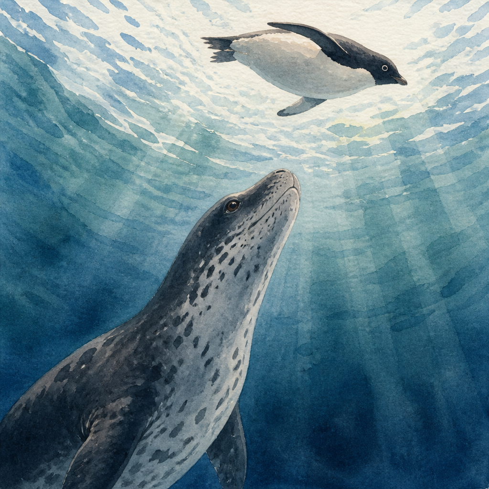

Wissen, das staunen lässt
Warum Pinguine schwarz-weiß sind.
Eine kleine Wissensgeschichte über die cleverste Tarnung der Welt — und das Geheimnis hinter dem schicken Anzug der Pinguine.

Samira Wissensfreund
Edutainment · für 7–10 Jahre